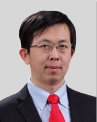

Dongchao Wen (温东超)
|  |
https://dblp.org |
Education & Qualification
I received the B.E. degree (Prof. Jingwen Li （李景文）) in electronic information engineering and the M.S. degree (under supervision of Prof. Yinqing Zhou （周荫清） and Prof. Jie Chen （陈杰）) in signal and information processing from Beihang University, Beijing, China, in 2002 and 2005, respectively. After that, I got a professor's qualification certificate (professor of engineering) of Chinese Academy of Sciences in 2018.
Research Interest
My current research interests encompass two main areas:
Trustworthy AI: I am dedicated to addressing various aspects of ensuring the robustness, reliability, explainability, security, and privacy of AI systems. By focusing on these critical factors, I strive to develop AI technologies that can be trusted and relied upon.
Human Analysis: Within this domain, my research explores topics such as face detection, tracking, recognition, and other related areas that involve the analysis of human behavior and characteristics. Through this work, I aim to enhance our understanding of human-related aspects and contribute to the advancement of AI technologies in effectively analyzing and interpreting such information.
By pursuing research in these areas, my goal is to make significant contributions to the development of AI technologies that are both trustworthy and capable of effectively analyzing and understanding human-related aspects.
Professional Experience
Currently, I am working as Principal Researcher at Canon Innovative Solution (Beijing) Co., Ltd. (formerly known as Canon Information Technology (Beijing) Co., Ltd.). I am leading a dynamic and innovative team, focusing on cutting-edge research in the field of deep learning. Our research endeavors encompass various areas including computer vision, efficient neural network design, and trustworthy deep learning.
Additionally, in 2019 and 2020, I served as the Principal Investigator for a collaborative face recognition technology project with Beijing University of Posts and Telecommunications. Our active participation in the NIST FRVT contest showcased our expertise and dedication to advancing the field of face recognition.
Patents
I have already filed 100+ patents in CN, JP and US.
News
On August.30th, 2024, We achieved No.2 out of 706 teams in Phase1, No.11 out of 184 teams in Phase2, No.13 (Excellence Awards) in the final phase, in Track 1: Deepfake Image Detection of the "Inclusion・The Global Multimedia Deepfake contest." (Team name: AntiFake)
Kaggle: Inclusion・The Global Multimedia Deepfake Detection
On July.5th, 2023, Face Recognition: My team achieved Rank No.5@(Investigation (R=1, T=0)by Developer) (total: 116 entries) in the world in NIST FRVT 1:N contest. (Team name: CompanyName-000, 1st submission)
NIST FRVT
On March.9th, 2023, Face Recognition: My team achieved Rank No.5@wild category (total: 493 entries) in the world in NIST FRVT 1:1 contest. (Team name: CompanyName-001, 2nd submission)
NIST FRVT
Achievements in Canon
Face Recognition: My team achieved Rank No.2@Visa-Border, No.1@Visa-Kiosk in the world in NIST FRVT 1:N Investigation contest On Nov.5th, 2020. (Team name: cib-000, 1st submission)
Face Recognition: My team achieved Rank No.8 in the world in NIST FRVT 1:N Identification contest On Nov.5th, 2020. (Team name: cib-000, 1st submission)
Face Recognition: My team achieved Rank No.5 in the world in NIST FRVT 1:1 contest On Jan.19th, 2021. (Team name: canon-002, 3rd submission)
Face Recognition: My team achieved Rank No.4 in the world in NIST FRVT 1:1 contest On Aug.5th, 2020. (Team name: cib-001, 2nd submission)
Face Recognition: My team achieved Rank No.25 in the world in NIST FRVT 1:1 contest On Dec.12th, 2019.(Team name: cib-000, 1st submission)
NIST FRVT
Publications
In 2025
Easy-to-hard Instance-level Feature Fusion for Co-saliency Detection
Ding Chuang, Zhidong Han, Gang Dong, Liang Lingyan, Dongchao Wen, Kaihua Zhang.
IEEE International Conference on Acoustics, Speech and Signal Processing (ICASSP) 2025.
Continuously Learning Video-level Object Tokens for Robust UAV tracking
Bin Chen, Shenglong Hu, Gang Dong, Liang Lingyan, Dongchao Wen, Kaihua Zhang.
IEEE International Conference on Acoustics, Speech and Signal Processing (ICASSP) 2025.
Spatio-Semantic Prompt guided Adaptive Segment Anything for Remote Sensing Change Detection
Shenglong Hu, Zhidong Han, Gang Dong, Liang Lingyan, Dongchao Wen, Kaihua Zhang.
IEEE International Conference on Acoustics, Speech and Signal Processing (ICASSP) 2025.
大模型时代的混合专家系统优化综述
史宏志, 赵健, 赵雅倩, 李茹杨, 魏辉, 胡克坤, 温东超, 金良.
计算机研究与发展 2025.
In 2024
Confidence-Aware RGB-D Face Recognition via Virtual Depth Synthesis
Zijian Chen, Mei Wang, Weihong Deng, Hongzhi Shi, Dongchao Wen *, Yingjie Zhang, Xingchen Cui, Jian Zhao.
IEEE/CVF Conference on Computer Vision and Pattern Recognition Workshops (CVPRW) 2024.
Enhancing Generalization of Invisible Facial Privacy Cloak via Gradient Accumulation
Xuannan Liu, Yaoyao Zhong, Weihong Deng, Hongzhi Shi, Xingchen Cui, Yunfeng Yin, Dongchao Wen *.
IEEE International Conference on Acoustics, Speech and Signal Processing (ICASSP) 2024.
In 2023
Gradient Attention Balance Network: Mitigating Face Recognition Racial Bias via Gradient Attention 【Paper】
Linzhi Huang, Mei Wang, Jiahao Liang, Weihong Deng, Hongzhi Shi, Dongchao Wen *, Yingjie Zhang, Jian Zhao.
IEEE/CVF Conference on Computer Vision and Pattern Recognition Workshops (CVPRW) 2023. (Oral)
Dive into the Resolution Augmentations and Metrics in Low Resolution Face Recognition: A Plain yet Effective New Baseline【Paper】
Xu Ling, Yichen Lu, Wenqi Xu, Weihong Deng, Yingjie Zhang, Xingchen Cui, Hongzhi Shi, Dongchao Wen *.
R2HCAI: The AAAI 2023 Workshop on Representation Learning for Responsible Human-Centric AI at AAAI Conference on Artificial Intelligence 2023 (AAAI) 2023.
Model and Data Agreement for Learning with Noisy Labels【Paper】
Yuhang Zhang, Weihong Deng, Xingchen Cui, Yunfeng Yin, Hongzhi Shi, Dongchao Wen *.
2nd International Workshop on Practical Deep Learning in the Wild Workshop at AAAI Conference on Artificial Intelligence 2023 (AAAI) 2023.
In 2022
Face Clustering via Adaptive Aggregation of Clean Neighbors.【Paper】
Shiyong Hong, Yaobin Zhang, Xu Ling, Weihong Deng, Yin Yunfeng, Zhang Yingjie, Hongzhi Shi, Dongchao Wen *.
The 3rd International Workshop on Human-Centric Multimedia Analysis (HCMA '22) in conjunction with ACM International Conference on Multimedia (MM) 2022.
Improving Autism Spectrum Disorder Prediction by Fusion of Multiple Measures of Resting-State Functional MRI Data.【Paper】
Lingyan Liang, Gang Dong, Changsheng Li, Dongchao Wen , Yaqian Zhao, Jing Li.
44th Annual International Conference of the IEEE Engineering in Medicine & Biology Society (EMBC)2022. (Oral)Dynamic Training Data Dropout for Robust Deep Face Recognition.【Paper】
Yaoyao Zhong, Weihong Deng,Han Fang, Jiani Hu, Dongyue Zhao, Xian Li, Dongchao Wen .
IEEE Transactions on Multimedia (TMM) 2022.
In 2021
FTAFace: Context-enhanced Face Detector with Fine-grained Task Attention.【Paper】
Deyu Wang, Dongchao Wen *, Wei Tao, Lingxiao Yin, Tse-Wei Chen, Tadayuki Ito, Kinya Osa, Masami Kato.
ACM International Conference on Multimedia (MM) 2021.
CASSOD-Net: Cascaded and Separable Structures of Dilated Convolutional Neural Networks for Embedded Vision Systems and Applications.【Paper】
Tse-Wei Chen, Deyu Wang, Wei Tao,Dongchao Wen, Lingxiao Yin, Tadayuki Ito, Kinya Osa, Masami Kato.
IEEE/CVF Conference on Computer Vision and Pattern Recognition Workshops (CVPRW) 2021. (Oral)
Augmented Face Representation Learning via Transitive Distillation.【Paper】
Han Fang, Weihong Deng, Yaoyao Zhong, Jiani Hu, Dongyue Zhao, Xian Li, Dongchao Wen .
IEEE International Conference on Automatic Face and Gesture Recognition 2021 (FG) 2021.
Adaptive Label Noise Cleaning with Meta-Supervision for Deep Face Recognition.【Paper】
Yaobing Zhang, Weihong Deng, Yaoyao Zhong, Jiani Hu, Xian Li, Dongyue Zhao, Dongchao Wen .
International Conference on Computer Vision (ICCV) 2021.
-
Sigmoid-constrained Hyper-sphere Loss for Robust Face Recognition. 【Paper】
Yaoyao Zhong, Weihong Deng, Jiani Hu, Dongyue Zhao, Xian Li, Dongchao Wen .
IEEE Transactions on Image Processing(TIP), 2021.
开源：基于 SFace 损失函数训练的轻量人脸识别模型贡献了 OpenCV开源库（全球最受欢迎的计算机视觉开源软件，Github 五万多星）的人脸识别模块（附实例程序）
In 2020
Fully Supervised and Guided Distillation for One-Stage Detectors.【Paper】
Deyu Wang, Dongchao Wen *, Junjie Liu, Wei Tao, Tse-Wei Chen, Kinya Osa, Masami Kato.
Asian Conference on Computer Vision (ACCV) 2020.
QuantNet: Learning to Quantize by Learning within Fully Differentiable Framework.【Paper】
Junjie Liu, Dongchao Wen *, Deyu Wang, Wei Tao, Tse-Wei Chen, Kinya Osa, Masami Kato.
European Conference on Computer Vision Workshops (ECCVW) 2020. (Oral)
Hardware Architecture of Embedded Inference Accelerator and Analysis of Algorithms for Depthwise and Large-Kernel Convolutions.【Paper】
Tse-Wei Chen, Wei Tao, Deyu Wang, Dongchao Wen, Masami Kato, Kinya Osa.
European Conference on Computer Vision Workshops (ECCVW) 2020. (Oral)
-
BAMSProd: A Step towards Generalizing the Adaptive Optimization Methods to Deep Binary Model.【Paper】
Junjie Liu, Dongchao Wen, Deyu Wang, Wei Tao, Tse-Wei Chen, Kinya Osa, Masami Kato.
IEEE/CVF Conference on Computer Vision and Pattern Recognition Workshops (CVPRW) 2020. (Oral)
Global-Local GCN: Large-Scale Label Noise Cleansing for Face Recognition.【Paper】
Yaobing Zhang, Weihong Deng, Mei Wang, Jiani Hu, Xian Li, Dongyue Zhao, Dongchao Wen .
IEEE/CVF Conference on Computer Vision and Pattern Recognition (CVPR) 2020.
In 2019
Condensation-Net: Memory-Efficient Network Architecture With Cross-Channel Pooling Layers and Virtual Feature Maps.【Paper】
Tse-Wei Chen, Motoki Yoshinaga, Hongxing Gao, Wei Tao, Dongchao Wen, Junjie Liu, Kinya Osa, Masami Kato.
IEEE/CVF Conference on Computer Vision and Pattern Recognition Workshops (CVPRW) 2019.
DupNet: Towards Very Tiny Quantized CNN With Improved Accuracy for Face Detection.【Paper】
Hongxing Gao, Wei Tao, Dongchao Wen, Junjie Liu, Tse-Wei Chen, Kinya Osa, Masami Kato.
IEEE/CVF Conference on Computer Vision and Pattern Recognition Workshops (CVPRW) 2019.
-
Knowledge Representing: Efficient, Sparse Representation of Prior Knowledge for Knowledge Distillation.【Paper】
Junjie Liu, Dongchao Wen, Hongxing Gao, Wei Tao, Tse-Wei Chen, Kinya Osa, Masami Kato.
IEEE/CVF Conference on Computer Vision and Pattern Recognition Workshops (CVPRW) 2019.
In 2018
IFQ-Net: Integrated Fixed-Point Quantization Networks for Embedded Vision.【Paper】
Hongxing Gao, Wei Tao, Dongchao Wen, Tse-Wei Chen, Kinya Osa, Masami Kato.
IEEE/CVF Conference on Computer Vision and Pattern Recognition Workshops (CVPRW) 2018. (Oral)
Patents
Granted US Patents
US12165398B2, "Method and apparatus for training an object recognition model"，Dongyue Zhao，Dongchao Wen，Xian Li, Weihong Deng, Jiani Hu.
US12147901B2，"Training and application method of a multi-layer neural network model, apparatus and storage medium"，Hongxing Gao，Tao Wei，Tse-Wei Chen，Dongchao Wen，Junjie Liu.
US12026974B2, "Training method and training apparatus for a neural network for object recognition"，Dongyue Zhao，Dongchao Wen，Xian Li, Weihong Deng, Jiani Hu.
US11847569B2, "Training and application method of a multi-layer neural network model, apparatus and storage medium"，Wei Tao，Hongxing Gao，Tse-Wei Chen，Dongchao Wen，JunjieLiu.
US11755880B2, "Method and apparatus for optimizing and applying multilayer neural network model, and storage medium"，Hongxing Gao，Tao Wei，Tse-Wei Chen，Dongchao Wen.
US11270108B2, "Object tracking method and apparatus", Shiting Wang, Qi Hu, Dongchao Wen.
US11106945B2, "Training and application method of neural network model, apparatus, system and storage medium", Junjie Liu, Tse-Wei Chen, Dongchao Wen, Hongxing Gao, Wei Tao.
US10475204B2, "Fast multi-object detection and tracking system", Shiting Wang, Qi Hu, Dongchao Wen.
US10318797B2, "Image processing apparatus and image processing method", Donghui Sun, Xian Li, Dongchao Wen.
US9600884B2, "Object shape aligning apparatus, object processing apparatus and methods thereof", Fuguo Zhu, Yong Jiang, Xian Li, Lifeng Xu, Dongchao Wen.
Granted Japanese Patents
JP7584998B2, "授权物体認識モデルを学習するための方法および装置", Dongyue Zhao，Dongchao Wen，Xian Li, Weihong Deng, Jiani Hu.
JP7371154B2, "顔の姿勢を検出する装置及び方法、画像処理システム、並びに記憶媒体", Qiao Wang, Deyu Wang, Kataro Kitajima, Tse-Wei Chen, Wei Tao, Dongchao Wen.
JP7009020B2, "ニューラルネットワークモデルの学習及び適用方法、装置、システム及び記憶媒体", Junjie Liu, Tse-Wei Chen, Dongchao Wen, Wei Tao, Deyu Wang.
JP6890653B2, "多層ニューラルネットワークモデルの学習及び適用方法、装置、並びに記憶媒体", Hongxing Gao，Wei Tao, Tse-Wei Chen, Dongchao Wen, Junjie Liu.
JP6990813B2, "多層ニューラルネットワークモデルの学習及び適用方法、装置、並びに記憶媒体", Hongxing Gao，Wei Tao, Tse-Wei Chen, Dongchao Wen, Junjie Liu.
JP6759411B2，"物体追跡方法および装置"，Shiting Wang, Qi Hu, Dongchao Wen.
JP6794593B2, "多階層ニューラルネットワークモデルを最適化して適用する方法及び装置、及び記憶媒体", Hongxing Gao，Wei Tao, Tse-Wei Chen, Dongchao Wen.
JP4966384B2, "シェーディング補正を行なう装置及び方法", Dongchao Wen, Lifeng Xu.
JP4847592B2, "歪み文書画像を補正する方法及びシステム", Dongchao Wen, Lifeng Xu.
Activities
- The Embedded Vision Workshop (in conjunction with CVPR Since 2005)
 |
Program Committee member |
Professional Services
Annual Conference on Neural Information Processing Systems (NeurIPS)
IEEE/CVF Conference on Computer Vision and Pattern Recognition (CVPR)
IEEE International Conference on Multimedia and Expo (ICME)
IEEE International Conference on Acoustics, Speech and Signal Processing (ICASSP)
IEEE International Joint Conference on Neural Networks (IJCNN)
Reviewer for Transactions/Journals
Program Committee/Reviewer for Conferences
Projects
---
Honors and Awards
科技创新英才, 中关村科学城总工会, 2021 年 4 月
Outstanding Technical Achievement Award, Canon Information Technology (Beijing) Co., Ltd., January 2021.
Outstanding Patent Proposal Award, Canon Inc., July 2020.
Outstanding Technical Achievement Award, Canon Information Technology (Beijing) Co., Ltd., January 2020.
A-level Patent Award, Canon Information Technology (Beijing) Co., Ltd., January 2019.
Excellent Patent Team Award, Canon Information Technology (Beijing) Co., Ltd., January 2019.
Excellent Patent Team Award, Canon Information Technology (Beijing) Co., Ltd., January 2018.
Excellent Patent Team Award, Canon Information Technology (Beijing) Co., Ltd., January 2016.
Outstanding Employee in 2007, Canon Information Technology (Beijing) Co., Ltd., January 2008.
A-level Patent Award, Canon Information Technology (Beijing) Co., Ltd., January 2008.
Canon Innovative Solution (Beijing) Co., Ltd.
The "611" Scholarship, Beihang University, 2004.
The Guanghua Scholarship, Beihang University, 2003.
The People's Scholarship, by Beihang University, 1999.
Undergraduate/Graduate Phase
Provincial-Level Merit Student, Nei Mongol, 1997.
Provincial-Level Merit Student, Nei Mongol, 1996.
High School Phase
Other Services
---